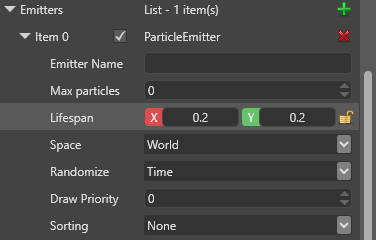
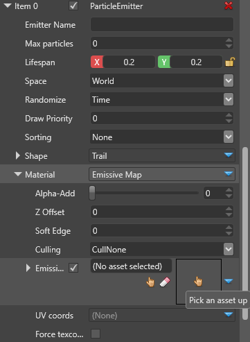
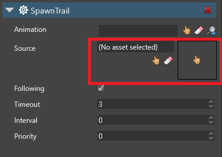

Tutorial: Create a trail
Intermediate Artist Programmer
This tutorial demonstrates how to use particles to create a trail effect for a sword swing.
1. Create a project
In the Stride Launcher, click Start and select New Game.
In the Create a new game dialog, under Asset Packs, select Animated Models. The Animated Models pack contains assets we'll be using in this example. (Note that we'll make our particle effect from scratch.)
Give the project a name (eg MyTrailEffect) and click OK. Game Studio loads a simple scene with a few entities.
We don't need the Sphere entity for this tutorial, so go ahead and delete it (select it and press Delete).
2. Set up the models and animation
In the Asset View, open the Models folder and drag and drop the mannequinModel into the scene. The mannequinModel contains a skeleton asset that we'll use for our sword slash animation.
With the mannequinModel selected, in the Property Grid, select Add component > Animations. This adds an Animation component to the model.

Under the Animations component, click
 (Add).
(Add).
Type a name for the animation.
Next to Clip, click
 (Select an asset).
(Select an asset).
Browse to the Animations folder, select the Sword_R animation, and click OK. This is our right-to-left slash animation.
To play the animation at runtime, we need to add an animation script. We can use the pre-built AnimationStart script. In the Asset View (bottom pane by default), click Add asset and choose Script > Animation start.

Specify a name for the script and click Create script.

9a. If Game Studio asks if you want to save your script, click Save script.
9b. If Game Studio asks if you want to reload the assemblies, click Reload assemblies.
With the mannequinModel selected, in the Property Grid, click Add component and select the AnimationStart script.

Note
If the animation script isn't in the list of components, in the taskbar, save your project and click Reload game assemblies and update scripts.
Under the Animation component, under Item 0, click
(Select an asset).Browse to the Animations folder and select the Sword_R animation again.
Now let's give the mannequin a weapon. In the Asset View, browse to the Models folder and drag the SwordModel to the mannequinModel in the Entity Tree. This makes the SwordModel a child entity of the mannequinModel.
In the Entity Tree, expand mannequinModel to see its child entities, and select SwordModel.
With the in the Property Grid, click Add component and select Model Node Link. This is called a Bone Link in some versions of Stride.

We can use this to link the SwordModel to a point in the mannequinModel skeleton. There's no need to specify a target, as the entity uses its parent entity (mannequinModel) by default.
For more information, see the Model node links page.
Under Model Node Link, in the Node Name (or Bone) field, select weapon_bone_R. This attaches the model to the point in the skeleton that uses a weapon in the right hand.
Let's see how everything looks so far. Click Play to run the game and check it out. Remember you can use the mouse and WASD keys to move the camera and see the animation from different perspectives.
We have a swinging sword animation. Next, let's add a trail effect.
3. Create a basic trail
First we'll build a basic trail, just to see how it looks.
In Game Studio, select the SwordModel. In the Property Grid, click Add component and select Particle System.

This adds a particle system component to the model, which we'll use to build a trail effect.
Click Source to expand its properties.

Next to Emitters, click
(Add). This adds a new particle emitter.Under the emitter properties, set the Shape to Trail.
Unfortunately, we need to make a brief detour due to a bug in Stride. Under the Shape properties, set the Axis to Center. (The shape should really be set to Edge, but the Edge and Center settings are reversed in the UI. This will be fixed in Stride 1.9.3.)
Next to Spawners, click
(Add) and select Per frame.
This adds a per-frame spawner to the emitter, which spawns X number of particles per frame (as opposed to, say, per second).
Next to Initializers, click
(Add) and select Velocity.This adds a velocity initializer to the emitter.
At this point, you can grab the mannequin and move it around the scene to see how the particles behave. They look like a cloud of blocky smoke.
Under the velocity initializer, set both the Velocity min and Velocity max values to 0, 5, 0.

This restricts the particles to the Y axis, like an infinitely thin sheet of paper.
Next to Initializers, click
(Add) and select Direction.This adds a direction initializer to the emitter.
Expand the direction initializer to view the properties. Set both the Direction min and Direction max to 0, 0, -1. This aligns the trail with the direction of the swing animation.
Run the game to see how the particles look with the sword-swinging animation.
We have a trail, but it doesn't look too good yet. It's too long, it's a single block of color, its particles interconnect strangely, and it never disappears.
4. Sort the particles
Because the particles are rendered as billboards, the segments of the trail interconnect strangely. To create a proper trail effect, we need to sort the particles into an order by adding a spawn order initializer.
In the SwordModel properties, under Particle System > Source > Emitters, next to Initializers, click
(Add) and select Spawn Order.Note
Make sure you don't select Spawn Order (Parent) or Spawn Order (Group).

This adds a spawn order initializer to the emitter. It doesn't have any properties, but it gives the particles a SpawnID we can sort them by.
Under Emitters, under Sorting, choose ByOrder.

Under Initalizers, under the Velocity initializer, change both the Velocity min and Velocity max values to 0,0.5,0.

Run the game.
Now the particles move cohesively.
5. Change the length
In the SwordModel properties, under Particle System > Source > Emitters, change the Lifespan to 0.2, 0.2.

Move the mannequin around the scene and notice how the trails extinguish more quickly.
6. Add a texture
To fix the color, we'll give the particles a "swoosh" texture:

Save the texture image above (swoosh.png) to disk.
Import it into the project. To do this, in the Asset View, click Add asset > Textures > Color and select swoosh.png.
In the SwordModel properties, expand Emitters > Material. Click
(Select an asset). Browse to the Textures folder and select swoosh.png.
Set the Alpha-Add bar to 1, so it's 100% emissive.

Under the Particle emitter properties, expand Shape and set UV Coords to Stretched and UV Factor to 1.

Expand UV Rotate. Under Clockwise, select 90 degrees. This rotates the texture 90 degrees clockwise, so the "swoosh" lines point in the right direction.
Run the game.
We're getting closer. But the trail doesn't disappear, so it looks like it's attached to the sword. We need to make the effect appear when the mannequin swings, then disappear at the end of the swing.
7. Make the particle effect a prefab
So far, we've created a particle effect by attaching it as a component to the sword. Now we're going to separate the effect from the sword and make it an independent entity we can turn on and off when we like. To do this, we'll create a prefab. For more information about prefabs, see the prefab documentation.
Right-click the SwordModel and select Create prefab from selection.

Game Studio creates a prefab from the SwordModel and adds it to the Asset View. By creating a prefab from the selection, we can quickly copy over the options we've set up so far.
We don't want the SwordModel itself to be a prefab — we just used it as a template to create the prefab from. It should be separate from our new particle effect prefab, so right-click it and select Break link to prefab.
Because naming things properly makes everything easier, rename the prefab SwordTrail. To do this, in the Asset View, right-click the SwordModel prefab, select Rename, and type SwordTrail.
Double-click the SwordTrail prefab to open it in the Prefab Editor. This is where we'll customize the prefab.

The prefab contains just one entity, SwordModel. It's not going to be a model for much longer, so let's rename this entity SwordTrail (the same as the prefab it belongs to).
Remove the Model and the Model Node Link (or Bone Link) components from the SwordTrail entity. We don't need them any more — this prefab will just be a particle effect.
Likewise, under Particle System > Source > Emitters > Initializers, delete the Velocity initializer. For now, we want the prefab effect to be static.

In the SwordTrail properties, under Particle System > Source > Emitters > Spawners, set Loop to One shot and change Duration to 0.2, 0.2.

Now we've created a separate prefab for the particle effect, we don't need to keep a particle effect on the sword model. In the main scene, select SwordModel and delete the Particle System component.
8. Control the effect prefab with a script
We've created a sword trail effect prefab. Next we'll use a script to spawn the effect every time the mannequin swings and delete the effect a few frames later.
Open the project in Visual Studio. To do this, in Game Studio, click the Visual Studio icon (Open in IDE).

In Visual Studio, right-click the game project and select Add > New item. In the Name field, give your script the name SpawnTrail, and click Add.
Replace the script content with the code in this script: SpawnTrail.cs
This is a modified version of the Prefab Instance script included in Stride. Instead of listening to events or key presses, it listens to animation changes — such as our sword swing animation.
In the script, make sure the
namespaceis correct. This usually matches your Stride project name (eg MyTrailEffect).Save the script and the Visual Studio project (Ctrl + Shift + S).
In Game Studio, reload the assemblies.
In the MainScene, select the SwordModel.
In the SwordModel properties, click Add component and select the SpawnTrail script. This adds the script as a component.
Under the SpawnTrail component properties, next to Source, click
(Select an asset).
In the Entity Picker, select the SwordTrail prefab.

In the SpawnTrail component, in the Animation field, click the hand icon (Select an asset). The Select an asset window opens.
In the left pane, select the mannequinModel and click OK.

- Run the game.
Thanks to our script, the particle effect appears at the start of the sword swing animation and disappears at the end.
9. Adjust the trail start time
With the Sword_R animation asset selected, check the swing animation in the Asset Preview in the bottom-right. (If the Asset Preview isn't displayed, check View > Asset Preview.)
The Asset Preview shows the animation length in seconds. If you look closely, you can see the mannequin doesn't begin to swing the sword down until about 0.1 seconds into the animation. Let's set the trail effect to spawn just when the mannequin swings.
Select the SwordModel.
In the SpawnTrail properties, set the Start time to 0.06. This means the trail effect won't spawn until 0.06 seconds into the swing animation, which looks a little more natural. Feel free to tweak this to your liking.
Run the game to see how it looks.
You might notice our trail effect looks a little jagged, creating a "spiderweb" effect. Let's make it more curved.
10. Curve the trail
In the SwordTrail prefab, on the SwordTrail entity, under Particle System > Source > Emitters > Shape, set Smoothing to Best and Segments to 5.

This adds three vertices between the particles of our trail, which should be enough to create a noticeably smoother effect.
Run the game.
The inner curve, at the sword hilt, is smoother. But the curve at the sword's edge is still jagged.
We want to smooth the effect at the sword's edge, where it's more noticeable. To do that, we'll flip the particle direction.
Still in the SwordTrail prefab, in the Transform component properties, change the Position to 0, 0, -1.

This moves the starting point of the particle effect to the tip of the sword.
Run the game.
Now we have a new problem. Because we moved the particle effect to the tip of the sword, the particles are flying from the tip. We need to reverse their direction, so they move down along the sword blade to the hilt.
Under Particle System > Source > Emitters > Initializers, under the Direction initializer, change both the Direction min and Direction max to 0, 0, 1. This inverts the trail direction.
Run the game.
Congratulations! You created a trail effect from scratch. How you tweak it now is up to you.
Sample project
Here's a more elaborate trail that combines multiple particle effects:
If you'd like to see how it works, download the project file and take a look.